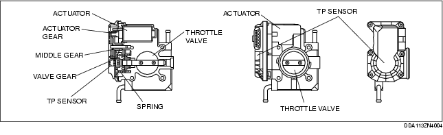

Throttle body construction/operation [ZY]
Construction
• The throttle body construction is as shown in the figure.

Operation
• The actuator is driven by a duty signal from the PCM. This driving force is transmitted to the actuator gear, middle gear, and valve gear, and the throttle valve opens.
• Conversely, to close the throttle valve, the actuator is reversed by an opposite signal from the PCM, and the throttle valve closes.
• The throttle valve opening angle is input to the PCM by the TP sensor.
• The throttle valve body has a control spring. If a malfunction occurs and the actuator cannot be controlled, the throttle valve is maintained balanced at an opening angle of 6° by the spring. Due to this, the required amount of air for vehicle operation is ensured.